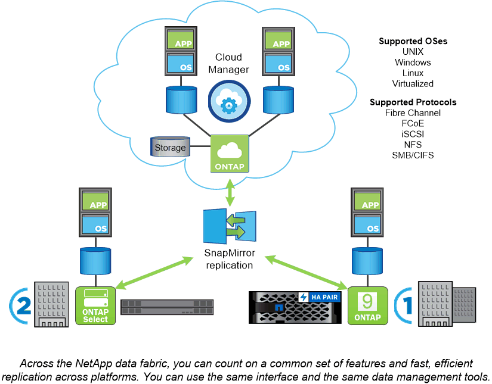

要求變更文件
要求變更文件 編輯此頁面
編輯此頁面 瞭解如何作出貢獻
瞭解如何作出貢獻
本繁體中文版使用機器翻譯，譯文僅供參考，若與英文版本牴觸，應以英文版本為準。
支援各種平台ONTAP
支援以區塊或檔案存取傳輸協定讀取和寫入資料的應用程式、以及從高速Flash、低價旋轉媒體到雲端型物件儲存等儲存組態、均可獲得統一化的資料管理軟體。ONTAP
執行功能可在NetApp設計的功能完善的功能、例如在市售硬體（例如、英文）上、以及私有、公有或混合雲（NetApp私有儲存設備或是英文版）上執行。ONTAP FAS AFF ONTAP Select Cloud Volumes ONTAP專業實作提供同級最佳的融合式基礎架構FlexPod （「Datacenter」）、並可存取第三方儲存陣列FlexArray （「整合式虛擬化」）。
這些實作組合構成_NetApp資料架構的基本架構、_採用通用的軟體定義方法來進行資料管理、以及跨平台快速高效地複寫。

關於FlexPod 資料中心與FlexArray 「虛擬化」 雖然NetApp Data Fabric的圖例中並未顯示FlexPod 、但重點FlexArray 在於實現「資料中心」和「虛擬化」ONTAP ：
|